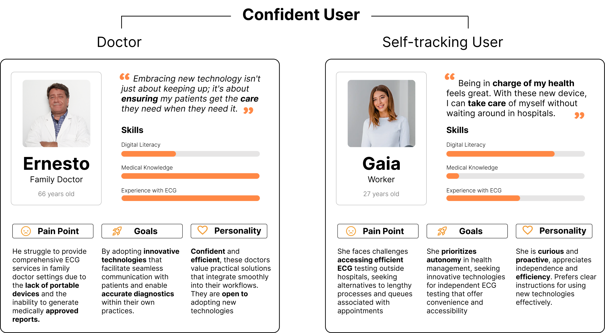

Redesign D-Heart
| Time | 5 Months (2024) |
|---|---|
| Team Members | Andrea Borsato, Liu Kaiyuan, Federica Ruggeri, Giulia JiangXian Zhu |
| Role | UX Research / UI/UX Design / Interaction Design |
| Client | Politecnico di Milano - Digital Design Studio |
| Course | Design Group Italia, D-Heart |
| Supervisors | Davide Spallazzo, Martina Sciannamè |
Project Overview
This project involves a comprehensive redesign of the entire system and touchpoints for the existing D-heart product. D-heart is a company specializing in the production of portable and affordable ECG devices. The current system, particularly the digital device, needs a redesign to enhance reliability and improve the user experience. Our efforts consisted of user testing and researching the critical issues with the existing setup, and subsequently proposing a redesign solution. Throughout this project, we engaged with all phases of research and applied various methodologies in user research and system redesign.
Design Process
UX Research
High-Priority Improvement Areas
Current problems
Unflexible system
Most of the elderly deal with health issues.
Misleading Communication
Inconsistent and unclear icons lead to confusion and errors.
Lack of Feedback
Users don't receive immediate feedback on their actions, making it hard to know if they're doing it right..
User Personas
A User-Centered Redesign That Improves Functionality and Upholds Company Values

Provide real-time guidance that feels natural, use clear and consistent communication to reduce confusion and errors, and offer effective feedback to ensure users are aware of their actions.
Design Process

Our Solution
Key Findings & Improvements
Consistent Communication
Device Design Improvements
Visual Feedback
Not connected
The central light slowly fades on and off.
Pairing
A blue arc rotates simulating loading.
Recording ECG
An heartbeat animation starts.
Improving Physical-Digital Connectivity
How does the system dialogue work?
Never Miss an Electrode Again!
Results Status Awareness
Check Results
Choose to send your results to your doctor or telecardiologist
With the new redesign, you'll be aware of the status of your results, whether they're not shared, pending, or validated.
One System for All
Offering the same functions and system for both doctors and self-tracking patients.
For the loved one
For Doctors
For Yourself
Perform the Test for Yourself or for Others
More Accurate
Decide whether to choose a quick and easy option or to aim for a more accurate result
It is never too late to perform an ECG!
The system's design accommodates starting the test from different application sections, aligning with the user's mental model for enhanced flexibility and error prevention.